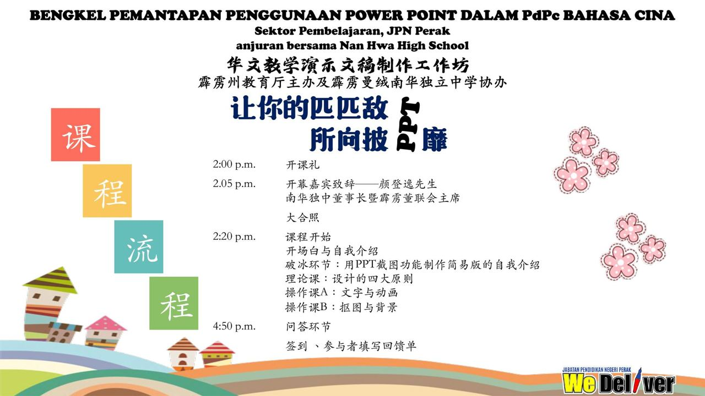

《让你的匹匹敌所向披靡》
《让你的匹匹敌所向披靡》
主题：
华文教学演示文稿（PPT）制作工作坊之让你的匹匹敌所向披靡
Bengkel Pemantapan Penggunaan Power Point Dalam PdPC Bahasa Cina
主讲：林子策主任（南华独中项目策划处）
对象：霹雳州中小学华文老师
日期：8-5-2023 （星期一）
时间：下午2时至5时
平台：谷歌会议室
谷歌会议室链接：https://meet.google.com/gno-xvnx-oct （请使用Delima 登入，只限五百人）
直播间链接🔗：https://stream.meet.google.com/stream/e40fc722-384e-4941-ad7a-3e3cdd43188f
也欢迎有兴趣的老师们参加。
#工作坊 #南华独中 #曼绒 #实兆远
